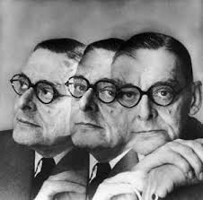
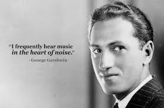
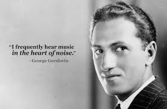
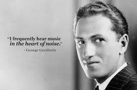

Home
About Us
Famous People
Historical Facts
Famous People
T.S. Elliot - Writer

George Gershwin - Composer and Pianist

Linda Hamilton - Actor
Serena Williams - Athlete
Jack LaLanne - Godfather of Modern Fitness
Olivia Newton-John - Singer, Songwriter, and Actor


 
